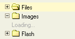

Segtuv懦 valdymas susideda i拧 "i拧si拧akojan膷io meniu" segtuv懦
Tai vadinama "i拧si拧akojantis meniu" nes J奴s matote segtuv懦 hierarchij膮 atrodan膷i膮 kaip i拧si拧akojan膷ios 拧aknys. Tai naudojama kaip grafinis atvaizdavimas, kuris 拧iuo metu yra
Kad atvertum臈te segtuv膮, atverti jo "vaikus" segtuvus, paspauskite pliuso 啪enkl膮
( ) segtuvo priekyje. Jei pliuso
啪enklo n臈ra, tuomet segtuvas neturi po savimi kit懦 segtuv懦.
) segtuvo priekyje. Jei pliuso
啪enklo n臈ra, tuomet segtuvas neturi po savimi kit懦 segtuv懦.
Per啪i奴r臈kite "漠krovimas pagal u啪klaus膮" 啪emiau 拧iame puslapyje, kad geriau suprastum臈te kaip yra 寞kraunami segtuvai.
Tam, kad u啪darytum臈te segtuv膮, paslepiant po juo esan膷ius segtuvus, paspauskite ant
minuso ( ) 啪enklo priekyje.
) 啪enklo priekyje.
Tam, kad pasirinktum臈te segtuv膮, paspauskite ant segtuvo pavadinimo arba ant jo ikono. Pasirinktas segtuvas tur臈s kitoki膮 spalv膮 arba fon膮.
I拧pl臈stines operacijas galima pasiekti i拧 "Kontekstinio Meniu". Galimi 拧ie pasirinkimai:

D臈mesio: Kai kurie kontekstinio meniu mygtukai gali b奴ti i拧jungti CKFinder nustatymuose.
Kad sukurtum臈te segtuv膮 segtuve, paspaukite "Naujas segtuvas" pasirinkim膮 kontekstiniame meniu. Atsivers dialogas, klausiantis apie nauj膮 pavadinim膮. 漠ra拧ykite pavadinim膮 ir patvirtinkite tai.
Ne visi simboliai gali b奴ti naudojami pavadinimuose, d臈l tam tikr懦 apribojim懦 kurie yra
sistemose kuriose paleistas CKFinder. Pvz.: 拧ie simboliai negali b奴ti naudojami papk臈se
ir fail懦 pavadinimuose:
\ / :
* ? " <
> |
Kad pervadintum臈te segtuv膮, paspaukite "Pervadinti" pasirinkim膮 kontekstiniame meniu. Atsivers dialogas, klausiantis apie nauj膮 pervadinim膮. 漠ra拧ykite pavadinim膮 ir patvirtinkite tai.
Ne visi simboliai gali b奴ti naudojami pavadinimuose, d臈l tam tikr懦 apribojim懦 kurie yra
sistemose kuriose paleistas CKFinder. Pvz.: 拧ie simboliai negali b奴ti naudojami papk臈se
ir fail懦 pavadinimuose:
\ / :
* ? " <
> |
D臈mesio: pervadindami segtuv膮, nuorodos 寞 juos, esan膷ios kituose puslapiuose, bus pa啪eistos tod臈l failai buv臋 tame segtuve bus nepasiekiami i拧 i拧orini懦, prie拧 tai nustatyt懦 nuorod懦. Tod臈l, atsakingai naudokit臈s 拧ia funkcija.
Kad i拧trintum臈te segtuv膮, paspaukite "I拧trinti" pasirinkim膮 kontekstiniame meniu. Atsivers dialogas, klausiantis apie i拧trynim膮. Patvirtinkite i拧trynim膮.
D臈mesio: i拧trynus segtuv膮, nuorodos 寞 failus, esan膷ios kituose puslapiuose, bus pa啪eistos tod臈l failai buv臋 tame segtuve bus nepasiekiami i拧 i拧orini懦, prie拧 tai nustatyt懦 nuorod懦. Tod臈l, atsakingai naudokit臈s 拧ia funkcija.
Pats did啪iausias skirtumas tarp CKFinder ir segtuv懦 i拧si拧akojimo lyginant su tais kurie yra operacin臈se sistemose, yra tas, kad CKFinder, segtuvus 寞krauna "pagal u啪klaus膮". Tai rei拧kia, kad visi segtuvai paleidimo metu i拧kart ne寞kraunami, bet 寞kraunama ma啪a j懦 dalis kai yra atveriamas pats segtuvas. Tai yra reikalavimas pa啪angesn臈se web programose kaip CKFinder.
漠kraunam懦 segtuv懦 indikatorius yea u啪ra拧as "Pra拧au palaukite..." kuris atsiranda atidarius nauj膮 segtuv膮:

漠krovimo pavadinimas i拧 kart i拧nyks, kai tik segtuvai bus 寞krauti. 漠krovus segtuvus, 拧is u啪ra拧as daugiau nebepasirodys.